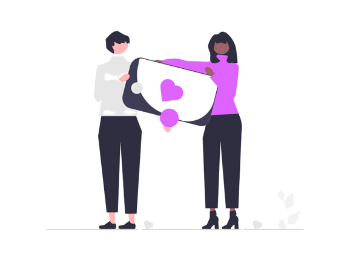
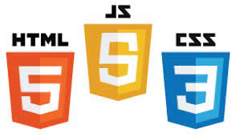
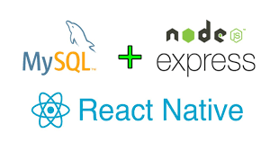

O jeito mais simples, rápido e seguro de encontrar aquilo que precisa e ajudar aqueles que não possuem nada .
comunidade
CONHEÇA UM POUCO SOBRE A NOSSA COMUNIDADE
MISSÃO
Nossa missão é facilitar o processo de intermediação de doações, em prol de uma comunidade melhor, conectando pessoas que necessitem de algo e aqueles que possam e desejem doar.
VISÃO
Ser referencial em ações de doação, ajudar quem necessite em território nacional através dos feitos, consolidado como sociedade transparente e igualitária.
VALORES
Responsabilidade social e trabalho em comunidade.
SEGMENTO DA APLICAÇÃO
O aplicativo encaixa-se na segmentação da intermediação, onde será adquirido por aqueles que desejem realizar uma doação e/ou por aqueles que necessitem de algo, portanto, doadores e receptores, conectando-os.
 saiba mais
saiba mais
Sobre nós
ENTENDA QUEM SOMOS
A DoneAction é uma de ação humanitária que, por meio
de um aplicativo, visa aplacar as dificuldades de intermediação
na hora de doação e recebimento de doações entre indivíduos.
Nossa comunidade possui conhecimento que estamos em um país
onde a desigualdade social é marcante, o período pandêmico acentuou
ainda mais esse problemas, gerando impactos e dificuldades ao acesso
de múltiplos setores, como o econômico e educacional, além do aumento
na taxa de desemprego.
Diante dessa situação, os mais vulneráveis se tornaram alvos de ações
em prol da diminuição dos efeitos negativos, com isso nossa firma visa
ajudar em todos os setores que podemos estar dispostos.

DOCUMENTAÇÃO 🧐
Entenda como funciona atras do DoneAction.
DOCUMENTAÇÃO DO PROJETO
ITENS UTILIZADOS PARA O DESENVOLVIMENTO
utilizados no web
utilizados no aplicativo
